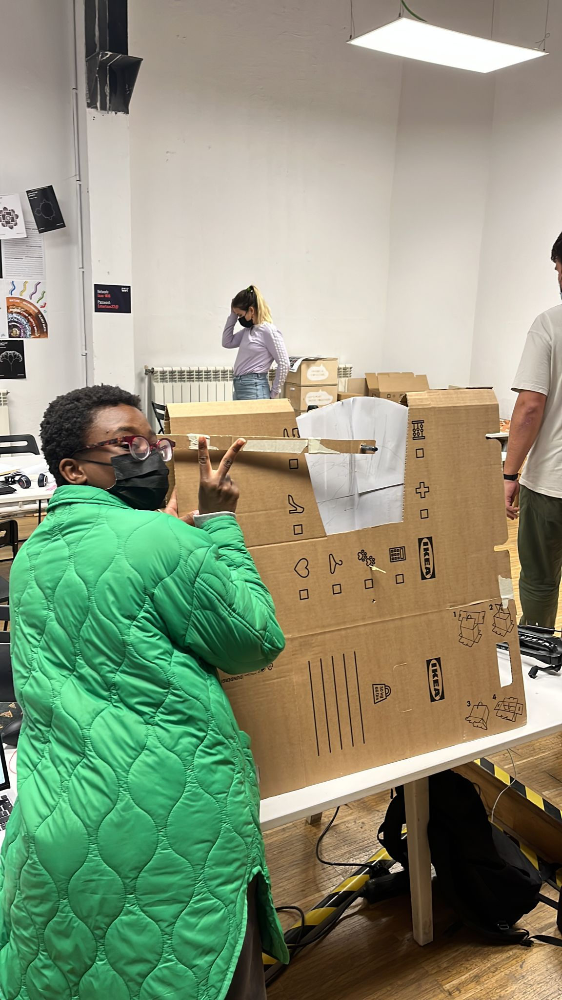
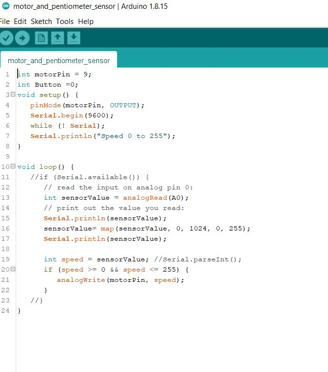
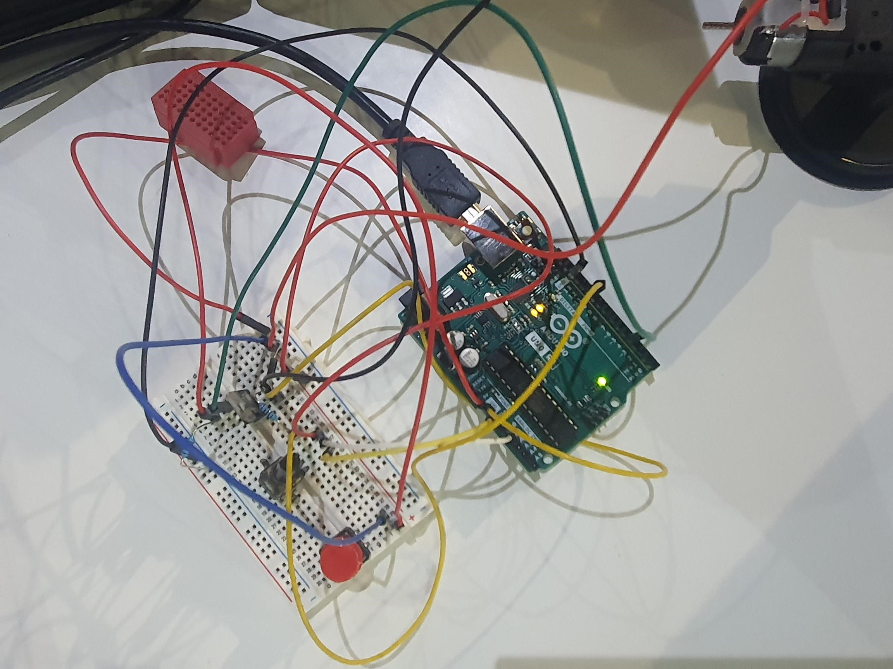
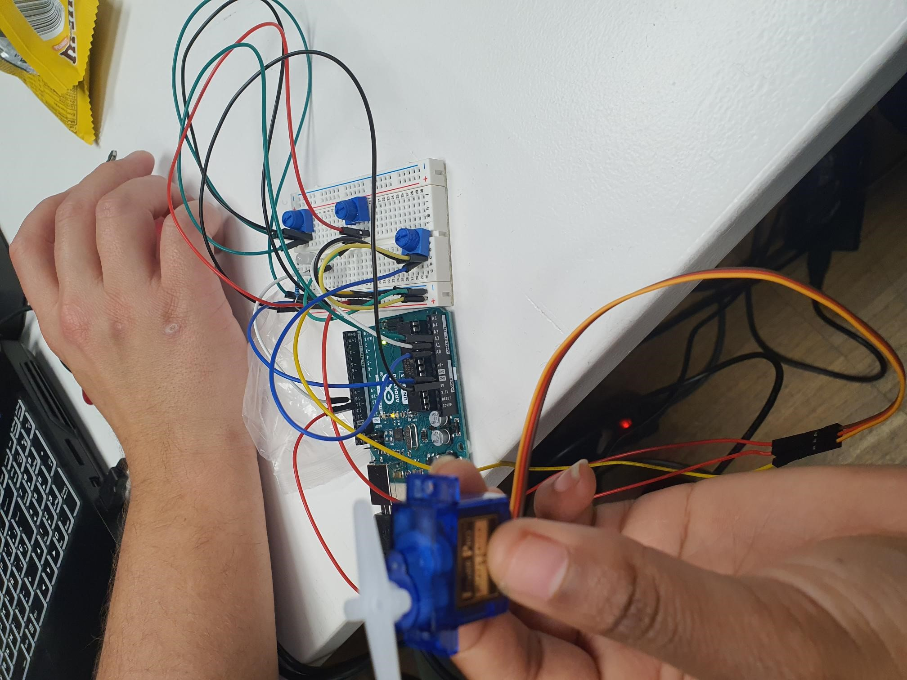
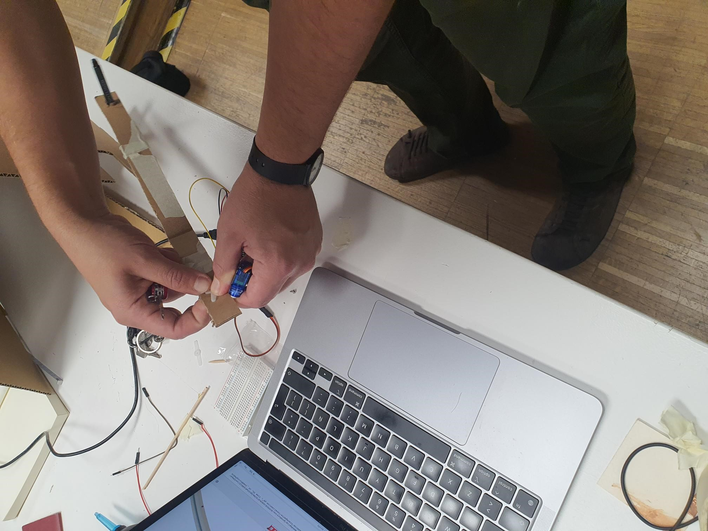
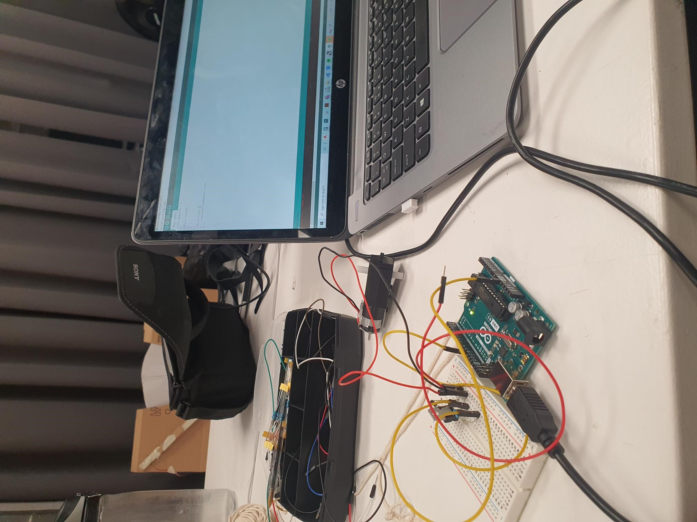

The artifact our collective wanted to make is a sort of vinyl that collects feedback or answers to provocative questions using arm movements as the means to answer those questions. We used Kinect, Grasshopper and Firefly to process the arm motions and motors that moved the pens drawing relfections of the answers. In combining and navigating our interests, we saw intersections in our interests, mainly themes of immersive and interactiveness, explorative education, engaging experiences and provocative products. After understanding our collective themes, we asked ourselves, how can we create an artifact that collects and presents data, using movement to answer provocative questions centered around MDEF journey and our collective consciousness.

While delegating tasks, I was excited to participate in learning how to use grasshopper, firefly and arduino as I am interested in proximity sensors as a tool to explore for my design practice. It was a big jump in my understanding of using grasshopper, but Joaquin helped explain the fundamentals. Here is what I learnt with each tool:
*Understanding the coding for the motors: After using the kinect for the first time to control a servo motor, I went to code the schematic. At first I was wrongly under the impression that I had to code the schematic for the DC motor on Arduino first, before running it on Grasshopper/ Firefly. With some help, I calibrated the speed and rpm of the motor using remapping. Building the Arduino schematic helped me understand the logic on Grasshopper
*Grasshopper / Rhino: I learnt to connect Firefly to Arduino with a serial port. At first I thought the schematic and code had to be written on Arduino, yet I learnt that values are written with an Arduino Write component.
*Electronics: I learnt how to connect a schematic of a DC motor, and that datasheets are useful for debugging, understanding components and how to connect them. For the first time, I used a potentiometer, mosfet, diodes and was helped by Michelange and Edu.
* Building the code and schematics for the DC motor, and regulations of its speed with a potentiometer
* Helping regulate the speed and rpm of both the servo motor and dc motor, using sliders on Grasshoper and the potentiometer, debugging the frames per second trying to regulate the speed in relation to the questions projected onto the screen
* Contributing to writing the text of the Github repository

Screenshot of the Arduino code for running the DC motor

Electronics configuration of the DC Motor that I set helped set up


Image of Joaquin and I configurring the servo motor that will be moved via motion sensing through Firefly

My research project is about the connection between the physical and the virtual. My main project in design dialogues is about creating a manifesto and understanding how to see art in the emerging virtual world. Currently, the project runs a virtual gallery and the building of a decentralized art community. The 3D space will be able to be exhibited and explored during design dialogues in means of virtual reality. The project Emergent Interrogations links with my project as it is both physical and virtual, The project related to my interests. As I am using virtual reality to navigate digital spaces, this projects connects as participants use their bodies through kinect to produce a physical artifact, to reflect on topics relating to our